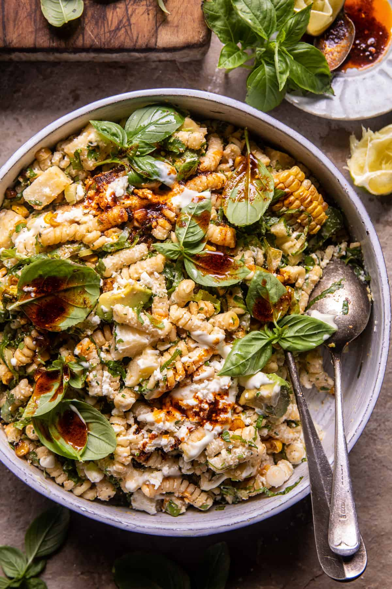

Simple Pasta Salad

Pasta salad is a versatile dish made with cooked pasta and a variety of vegetables, cheeses, and proteins, all tossed in a dressing. The dressing can be mayonnaise-based, vinaigrette, or a combination of both. Common ingredients include tomatoes, cucumbers, bell peppers, olives, and feta or mozzarella cheese. Pasta salad is often served cold, making it a popular choice for picnics, barbecues, and potlucks.
- Pasta: 16 ounce/1 package uncooked rotini pasta.
- Salad Dressing: 16 ounce/1 bottle italian salad dressing.
- Cucumbers: 2 chopped cucumbers.
- Tomato: 6 tomatoes chopped.
- Onion: 1 bunch green onions, chopped.
- Cheese: 4 ounce grated parmesan cheese.
- Seasonings, herbs, and sauces: 1 tablespoon italian seasoning.
- Gather the ingredients.
- Bring a large pot of lightly salted water to a boil. Place pasta in the pot, cook for 8 to 12 minutes, until al dente, and drain.
- Toss cooked pasta with Italian dressing, cucumbers, tomatoes, and green onions in a large bowl. Mix Parmesan cheese and Italian seasoning in a small bowl, and gently mix into the salad.
- Mix Parmesan cheese and Italian seasoning in a small bowl, and gently mix into the salad. Cover, and refrigerate for at least 30 minutes before serving.
- Enjoy!